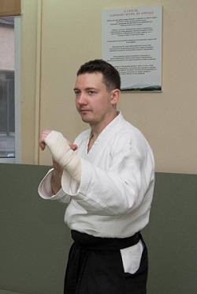
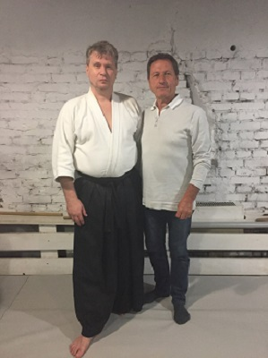
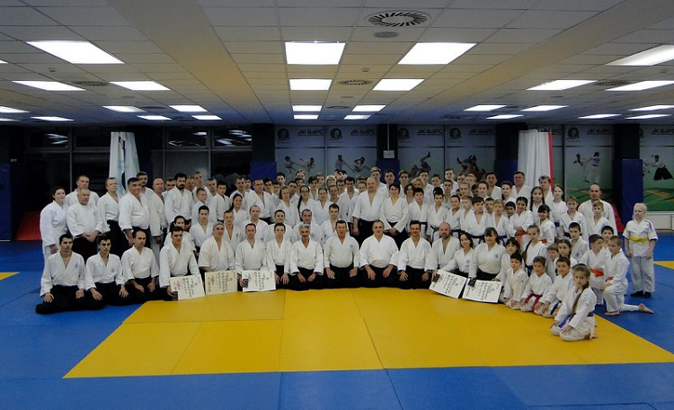
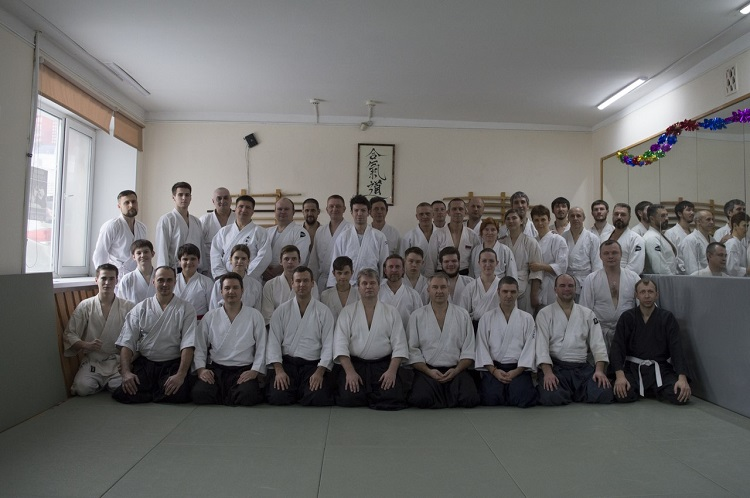
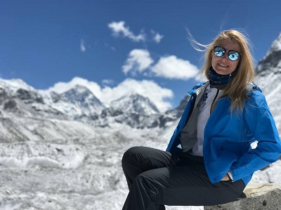
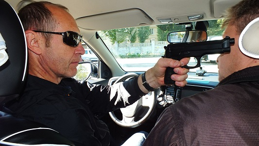
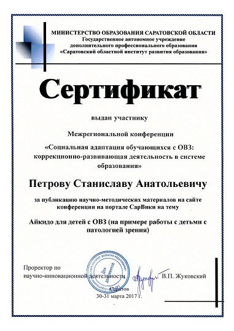
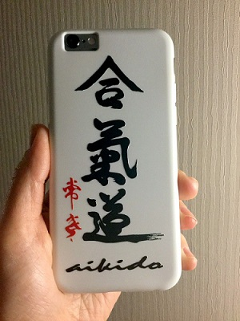

|
Отчет за 2017 год
|
Наступил 2018 … мы движемся дальше. Можно подвести итоги прошедшего
2017. Прошли 2 традиционных семинара М. Сафронова в Саратове:
- https://vk.com/album-3928256_250385126
- https://vk.com/album-3928256_244526260
|
|
Семинары прошли на базе СК «ЭВЕРЕСТ», что несколько ограничило количество
участников, зато произошел выигрыш в качестве. В рамках семинаров прошли
2 аттестации на шодан (И.Щеглов, А.Авдеев) и 1 на нидан (Никита Ильин,
инструктор «ЭВЕРЕСТА» и «ДИОНИКИ»).
|
|

|
Федерация приняла участие в традиционном московском семинаре Кристиана
Тиссье. На семинаре была проведена инструкторская аттестация.
Руководитель школы Станислав Петров подтвердил 4-й дан.
- https://vk.com/aikidovsaratove?w=wall-3928256_1066
|
|

|
|
Осенью съездили на семинар Бруно Гонзалеса в Казань.
|
|

|
В клубе проведено 63 детских и 61 взрослая аттестация на кю степени.
- https://vk.com/album-3928256_251255973
- https://vk.com/album-3928256_245143653
|
|

|
Занимающие в нашей федерации не ограничиваются только айкидо.
- http://everestclub.ru/news/iz-veresta-na-verest
|
|

|
Старшие ученики и инструктора федерации приняли участие в тематическом
семинаре по крав мага, самооборона в автомобиле. Это был полезный и
интересный опыт.
- https://vk.com/aikidovsaratove?z=album-3928256_248606697
|
|

|
К сожалению, в 2017 прекратили работу отделения федерации в заводском районе.
Однако заработали 2 группы в ленинском районе:
- http://www.saratov-aikido.ru/solnechniy.html
инструктор Никита Ильин
- http://www.saratov-aikido.ru/valter_zal.html
инструктор Андрей Вальтер
|
Продолжает работать наш специальный проект «айкидо для детей с ОВЗ»
- https://vk.com/aikidovsaratove?z=video-30385611_456243485%2F6b943a7bcccc28bf5c%2Fpl_wall_-3928256
- http://shkin.okis.ru/news/1461926
|
|

|
Ну и в финале 25 лет «ГАКУМОН ДОДЗЕ»
- https://vk.com/aikidotissier?w=wall-71530821_525%2Fall
25 лет стабильной и непрерывной несмотря ни на что работы в области развития айкидо.
|
|

|